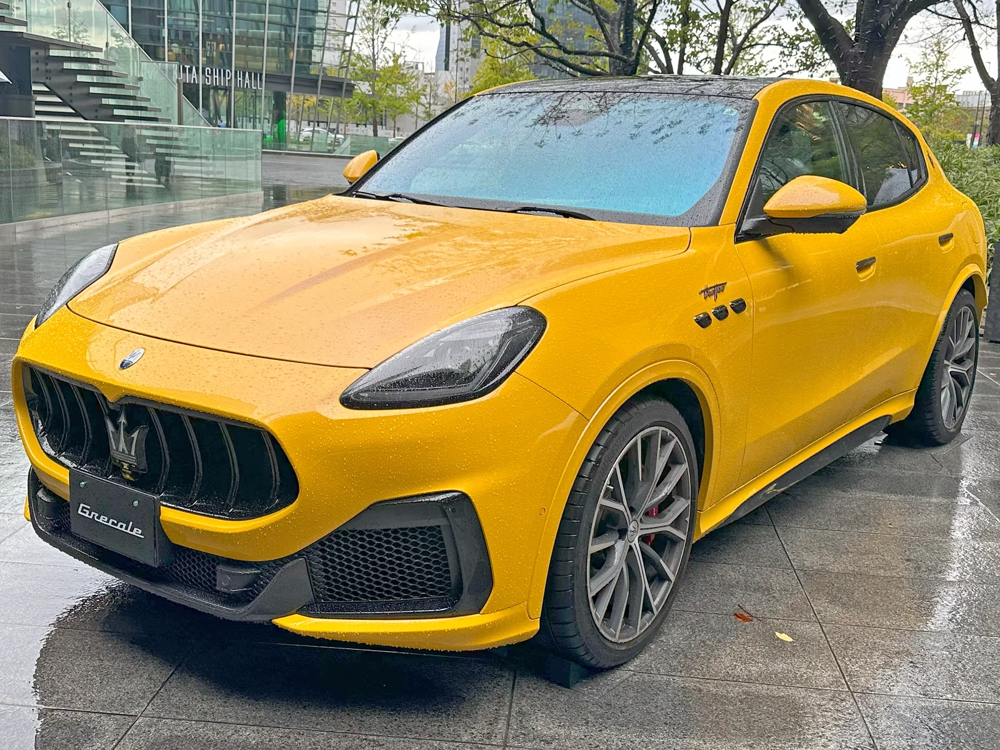
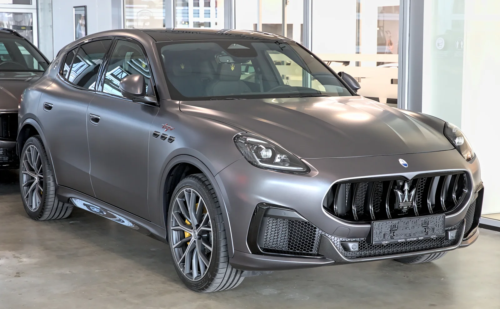
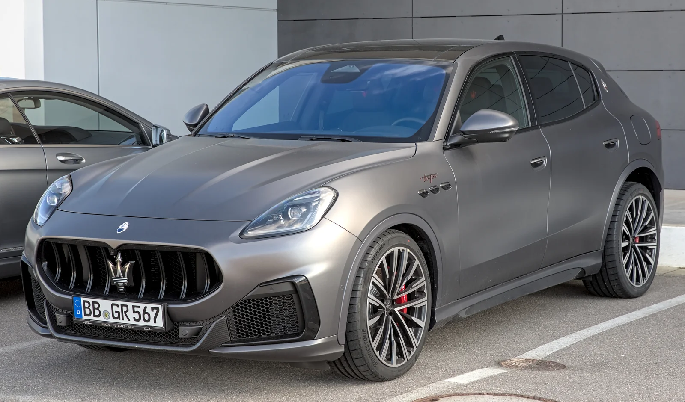
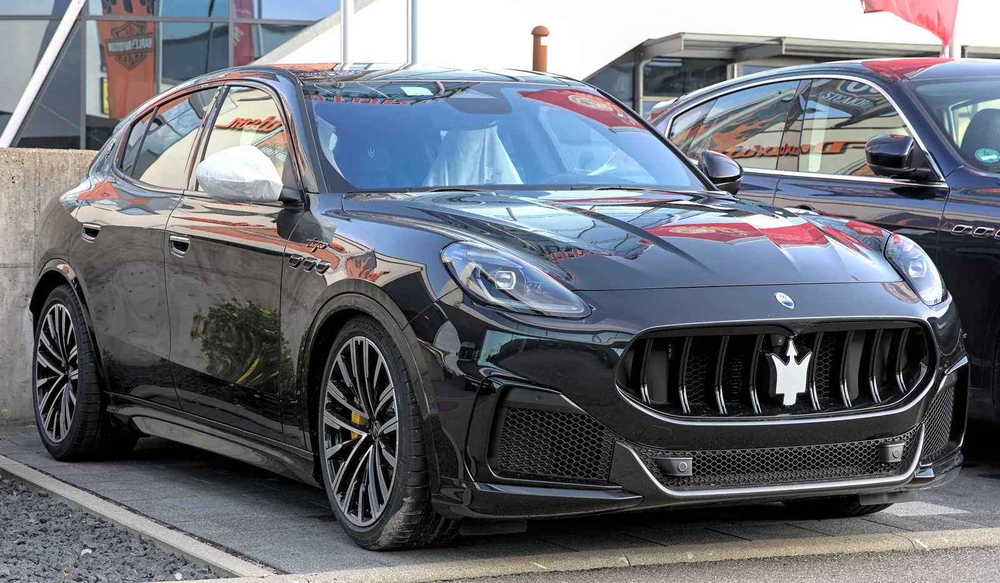
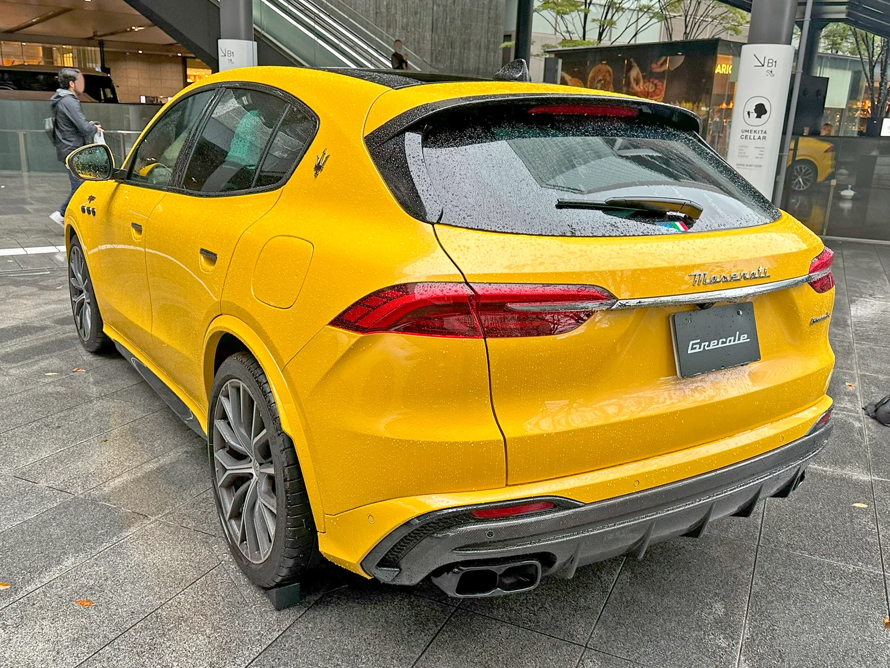
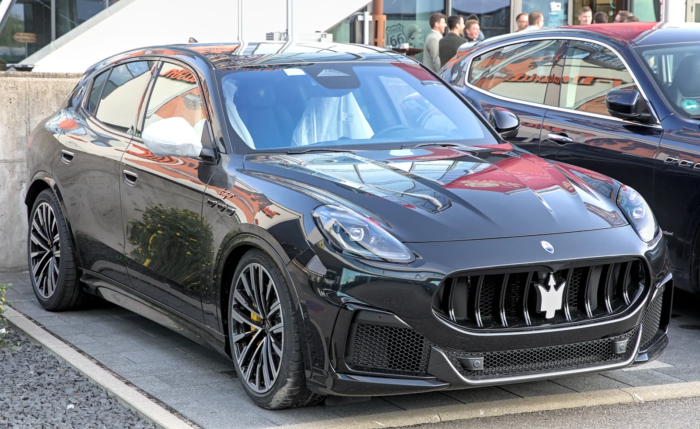

▲ 마세라티 브랜드 최상위 퍼포먼스 SUV, 그레칼레 트로페오 ⓒ Calreyn88, Wikimedia Commons (CC BY-SA 4.0)
마세라티의 중형 SUV '그레칼레' 라인업 최상위 트림인 그레칼레 트로페오가 국내외에서 잇따라 시승 리뷰의 대상에 오르고 있습니다. 슈퍼카 MC20에 처음 얹혔던 '네튜노(Nettuno)' V6 엔진을 SUV 차체에 옮겨 담은 것이 특징으로, 서울-대전 왕복 시승을 진행한 국내 매체부터 미국 현지 매체까지 다양한 관점의 평가가 나왔습니다. 실제 시승기들을 통해 확인된 주행 인상과 실내 구성, 국내외 가격 정보를 취합해 정리했습니다.
1. 외관 디자인 — SUV에 담은 쿠페의 실루엣

▲ 마세라티의 상징인 삼지창 엠블럼과 대형 그릴이 강렬한 인상을 남기는 그레칼레 트로페오 전면부 ⓒ Tokumeigakarinoaoshima, Wikimedia Commons (CC BY-SA 4.0)
국내 매체 이케이엔(EKN)의 시승기에 따르면, 그레칼레는 "측면으로 갈수록 낮아지는 루프라인이 SUV임에도 쿠페형 스포츠카의 실루엣을 연상"시킨다는 평가를 받았습니다. 전장 4,859mm, 휠베이스 2,901mm의 차체는 준수한 실내 공간을 확보하면서도 옆에서 봤을 때 날렵한 인상을 유지하는 것이 특징입니다.

▲ 낮게 깔린 보닛 라인과 트로페오 전용 에어로 파츠가 스포츠 SUV로서의 성격을 드러낸다 ⓒ Alexander Migl, Wikimedia Commons (CC BY-SA 4.0)
트로페오는 하위 트림과 구분되는 전용 프런트 범퍼와 대형 브레이크 캘리퍼, 트로페오 전용 배지 등으로 시각적 차별화를 뒀습니다. 해외 매체들 역시 이탈리안 브랜드 특유의 절제된 우아함을 언급하며, 독일 경쟁 모델 대비 이국적인 존재감을 그레칼레의 강점으로 꼽았습니다.
2. 파워트레인 & 주행 인상 — 네튜노 V6가 만드는 두 얼굴

▲ 3.0리터 트윈터보 네튜노 V6를 얹은 그레칼레 트로페오. 최고출력은 523마력에 달한다 ⓒ Alexander Migl, Wikimedia Commons (CC BY-SA 4.0)
그레칼레 트로페오에 탑재된 3.0리터 트윈터보 V6 '네튜노' 엔진은 마세라티의 미드십 슈퍼카 MC20에 처음 쓰인 유닛을 SUV용으로 다듬은 것으로, 523마력과 457lb-ft(약 62.9kg·m)의 토크를 냅니다. 8단 자동변속기와 맞물려 정지 상태에서 시속 100km까지 국내 시승 기준 3.8초(공식 0-60mph 제원 기준 3.6초), 최고속도 285km/h(177mph)를 기록합니다. 두 수치의 차이는 가속 구간을 재는 기준(km/h vs mph)이 다른 데서 비롯된 것으로, 사실상 슈퍼카급 가속 성능을 SUV 차체에 담았다고 볼 수 있습니다.

▲ 컴포트 모드에서는 얌전하지만, 스포츠·코르사 모드로 전환하면 완전히 다른 성격을 드러낸다 ⓒ Alexander Migl, Wikimedia Commons (CC BY-SA 4.0)
미국 매체 듀폰레지스트리(duPont REGISTRY)는 이 차의 성격을 두고 "컴포트 모드에서는 스로틀 반응이 절제되고 변속기도 부드러워 도심에서는 럭셔리 SUV처럼 얌전하게 움직이지만, 스포츠·코르사 모드로 전환하는 순간 스로틀이 날카로워지고 V6가 완전히 깨어난다"고 평가했습니다. 국내 이케이엔 시승기 역시 스포츠 모드에서 "엔진 반응이 날카로워지고 서스펜션도 단단해진다"고 전하며, "노면이 고르지 못한 구간에서도 충격을 효과적으로 걸러내며 안정적인 주행을 유지"한다고 승차감을 호평했습니다. 다만 스포츠 주행 위주로 진행된 국내 시승에서도 연비는 약 9.3km/L를 기록해, 준수한 실용 연비를 보여줬습니다.
3. 실내 & 편의 사양 — 고급감과 실용성의 균형

▲ 2열 레그룸을 넉넉하게 확보한 그레칼레의 후면부. 버튼 조작으로 접히는 2열 시트도 갖췄다 ⓒ Tokumeigakarinoaoshima, Wikimedia Commons (CC BY-SA 4.0)
실내는 12.3인치 센터 터치스크린과 하단 8.8인치 컴포트 패널로 구성된 2단 디스플레이 구조를 갖췄으며, 별도의 디지털 계기판까지 더해져 고급감과 실용성을 동시에 노렸습니다. 이케이엔 시승기에 따르면 "2열 탑승자 역시 별도의 터치스크린을 통해 공조 시스템을 조절할 수 있어 편의성이 높다"고 평가했으며, 앞좌석 통풍 시트와 뒷좌석 열선 시트, 열선 스티어링 휠로 구성된 클라이밋 패키지, 헤드업 디스플레이, 무선 충전, 웨어러블 키가 기본 제공됩니다. 버튼 하나로 접히는 2열 시트 역시 장거리 여행 시 실용성을 높이는 요소로 꼽혔습니다.
다만 완벽하지만은 않습니다. 듀폰레지스트리는 "패들 시프터가 방향지시등 레버와 간섭을 일으키고, 오디오 볼륨 조절 다이얼의 위치도 다소 어색하다"며 세부적인 인체공학적 아쉬움을 지적하기도 했습니다. 전반적인 소재 마감에 대해서는 "다양한 종류의 소프트 가죽과 깔끔한 스티칭, 풍부한 금속 소재를 사용해 절제되면서도 고급스러운 디자인"이라는 호평이 이어졌습니다.
4. 가격 & 총평 — "독일 경쟁 모델이 따라올 수 없는 개성"

▲ 포르쉐 마칸을 비롯한 독일 브랜드 고성능 SUV와 자주 비교선상에 오르는 그레칼레 트로페오 ⓒ Alexander Migl, Wikimedia Commons (CC BY-SA 4.0)
국내 판매가는 1억 6,480만 원부터로 책정됐으며, 미국에서는 기본 가격 11만 7,500달러에 21인치 단조 휠·프리미엄 오디오·기술 패키지가 더해진 시승차 기준 약 12만 1,000~12만 2,500달러 수준에 판매되고 있습니다. 두 시장 모두 포르쉐 마칸, BMW X3/X4, 메르세데스-벤츠 GLC 쿠페 등 독일 브랜드 고성능 SUV와 직접적인 경쟁 구도를 이룹니다.
미국 매체 포브스(Forbes)는 그레칼레 트로페오를 두고 "생각보다 얌전하다, 그러나 한계에 다다르기 전까지만(Tamer Than You Think—Until It Isn't)"이라는 표현으로 이 차의 이중적 성격을 압축했습니다. 듀폰레지스트리 역시 총평에서 "정교함보다는 개성을 앞세운 차"라며 "이탈리안 스타일링과 절제된 우아함, 진짜배기 퍼포먼스가 어우러져 독일 경쟁 모델이 따라올 수 없는 개성 있는 럭셔리 SUV를 완성했다"고 평가했습니다. 국내 이케이엔 시승기도 "단순히 빠른 SUV가 아니라 마세라티 특유의 감성과 퍼포먼스를 일상 속으로 끌어들인 모델"이라는 결론을 냈습니다.
결국 그레칼레 트로페오는 정밀함과 조용한 완성도로 무장한 독일 경쟁 모델들과는 다른 길을 택한 SUV에 가깝습니다. 두 나라 매체의 시승기를 종합하면, 퍼포먼스와 감성적 만족을 동시에 원하는 소비자에게는 여전히 매력적인 대안이라는 평가로 모아집니다.